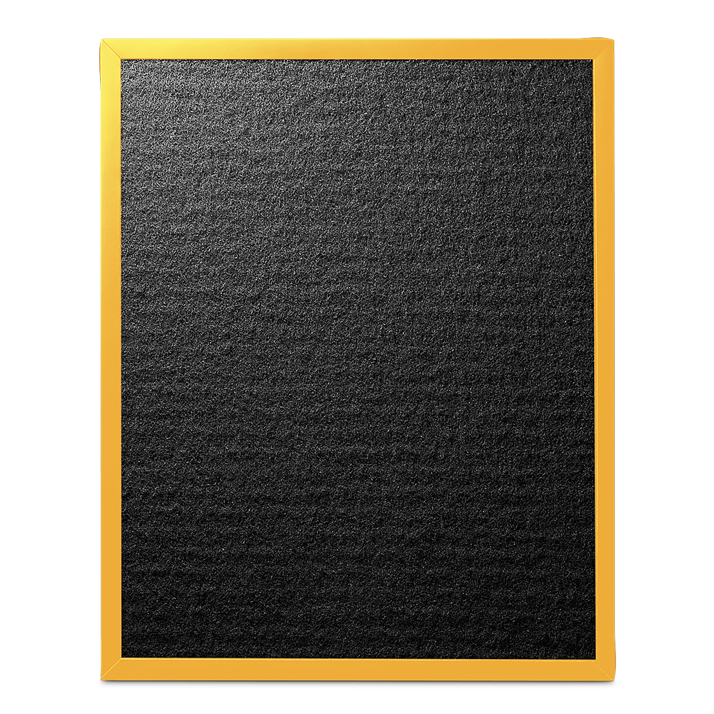

Фильтр ALLERGIST А703
Специальная система для эффективного очищения воздуха в вашем доме
Специальный фильтр ALLERGIST нового поколения Эффективен в борьбе с аллергенами, пыльцой, вирусами. Фильтр выполнен из нетканого материала и обработан несколькими специальными компонентами.
Антиаллергенная пропитка эффективно борется с более чем с 300 видами аллергенов растительного происхождения.
Карболен (активированный уголь) в мелкодисперсном состоянии является важным компонентом данной пропитки, за счет чего повышается его поверхность (1 грамм до 1500 м²), и соответственно – эффективность борьбы с газами и запахами.
Платина в мелкодисперсном состоянии используется, как активный компонент для устранения летучих органических соединений (VOC).
Специальный фильтр Allergist нового поколения
(VOC) Volatile Оrganic Сompound – это органические химические вещества, которые имеют высокое давление паров в обычных условиях при комнатной температуре. Другими словами, быстро испаряются.
VOC содержатся в грунтовках, шпаклевках, красках, лаках, различных пластиках, декоративных покрытиях и многих строительных материалах, т.к. они влияют на скорость высыхания, контролируют вязкость и твердость , поэтому концентрация VOC значительно выше внутри помещения (до 10 раз выше), чем на открытом воздухе.
VOC приводят к различным заболеваниям, таким как головная боль, глазные заболевания, заболевания дыхательных путей, а также снижение нашей иммунной системы и даже к образованию рака.
Характерным примером данной группы загрязнителей воздуха в помещениях является формальдегид.
Надежная защита здоровья вашей семьи
Фильтр ALLERGIST с антибактериальным комплексом эффективно борется с аллергенами, пыльцой, вирусами в течение 6 месяцев и подходит для воздухоочистителей А703.